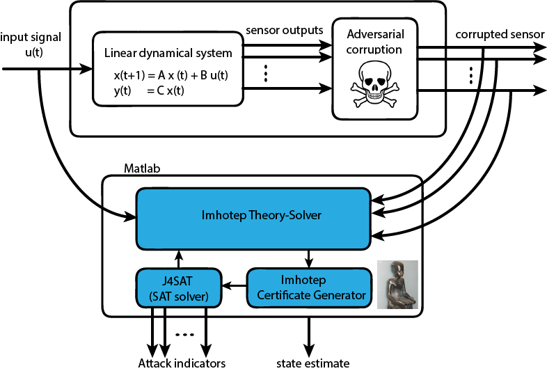

Imhotep-SMT
A novel SMT-based solver for secure state estimation
Secure Cyber-Physical Systems
The tight coupling between embedded computing and control has opened the door to a variety of engineering systems of increasing complexity. In such systems, often denoted as Cyber-Physical Systems (CPS), information from the "physical world" is quantized and processed by electronic components, and decisions taken by these "cyber" components are applied back to the physical world.
Unfortunately, this coupling between cyber and physical components is leading to systems where increased sophistication comes at the expense of increased vulnerability and security weaknesses. An important scenario is posed by a malicious adversary that can arbitrarily corrupt the measurements of a subset of sensors in a system. These sensor-related attacks can be deployed in any of the following components of a real-life CPS:
- Software. Malicious software running on the processor executing the sensor processing routine can access the sensor information before it is processed by the controller itself. The Stuxnet malware is an infamous example of this category of attacks. It exploits vulnerabilities in the operating system running over SCADA devices and once it obtains enough operating system privileges, it can corrupt the sensor measurements collected via the attacked SCADA device.
- Network. Modern control systems rely on a networked infrastructure to exchange sensor information. Therefore, an adversarial attacker can corrupt sensor measurements by manipulating the data packets exchanged between various components, as has been investigated, for instance, in the context of smart electric power grids.
- Sensors Spoofing. By tampering with the sensor hardware or environment, an adversary can mislead the sensor about the value of the physical signal it is attempting to measure. It has been shown to be possible for drivers to lose control of their cars by directly spoofing the velocity sensors of anti-lock braking systems in a non-invasive manner.
Imhotep-SMT Secure State Estimator
Imhotep-SMT is a novel solver that combines results from formal methods (Satisfiability Modulo Theories) and convex optimization to detect, in real time, if a set of sensor measurements collected from a dynamical system is corrupted by an adversarial attack. Imhotep-SMT is being applied to secure state estimation for several applications, e.g. robotic, automotive, and aerospace vehicles, smart grids, industrial refinery.
Imhotep-SMT currently supports systems that can be described by a linear dynamical model. However, in a near future it will be extended to some classes of nonlinear systems.
Imhotep-SMT is developed by a team of researchers at the University of California at Los Angeles and the University of California at Berkeley.

Note: Imhotep: (pronounced as "emmo-tepp") was an ancient Egyptian polymath who is considered to be the earliest known architect, engineer and physician in the ancient history. He is famous for the design of the oldest pyramid in Egypt, the Pyramid of Djoser (the Step Pyramid) at Saqqara, Egypt, 2630 - 2611 BC.
References:
(1) "Secure State Estimation Under Sensor Attacks: A Satisfiability Modulo Theory Approach"
Yasser Shoukry, Pierluigi Nuzzo, Alberto Puggelli, Alberto L. Sangiovanni-Vincentelli, Sanjit A. Seshia,
and Paulo Tabuada,
ArXiv e-prints, Dec. 2014. [url]
(2)"Sound and Complete State Estimation for Linear
Dynamical Systems Under Sensor Attack Using Satisfiability Modulo Theory Solving"
Yasser Shoukry, Alberto Puggelli, Pierluigi Nuzzo, Alberto L. Sangiovanni-Vincentelli,
Sanjit A. Seshia, and Paulo Tabuada
Proc. 2015 American Control Conference, to appear.
Acknowledgment:
This work was partially sponsored by:
- NSF project "Foundations of Secure Cyber Physical Systems" (award 1136174),
- NSF project "ExCAPE: Expeditions in Computer Augmented Program Engineering" (award 1138996),
- DARPA project "High-Assurance Cyber Military Systems (HACMS)" under agreement number FA8750-12-2-0247.
The U.S. Government is authorized to reproduce and distribute reprints for Governmental purposes notwithstanding any copyright notation thereon. The views and conclusions contained herein are those of the authors and should not be interpreted as necessarily representing the official policies or endorsements, either expressed or implied, of NSF, DARPA or the U.S. Government.
latest news
24 Jan. 2015
New features added to Imhotep-SMT.
15 Dec. 2014
New journal paper describing the theoretical underpinnings of Imhotep-SMT is submitted.
A preprint version can be accessed through arXiv.
28 Oct. 2014
First version of Imohtep-SMT is released.